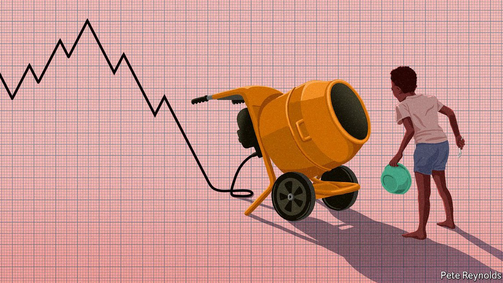
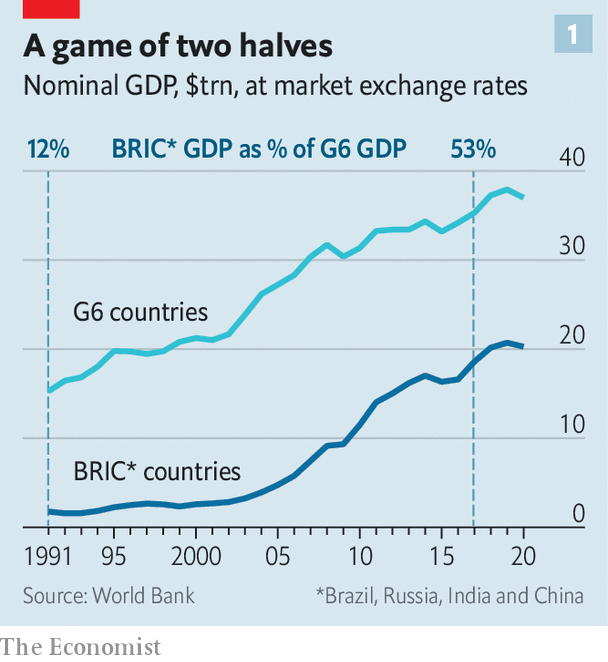
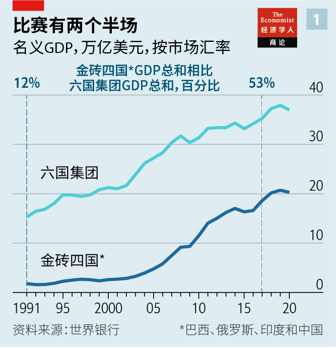
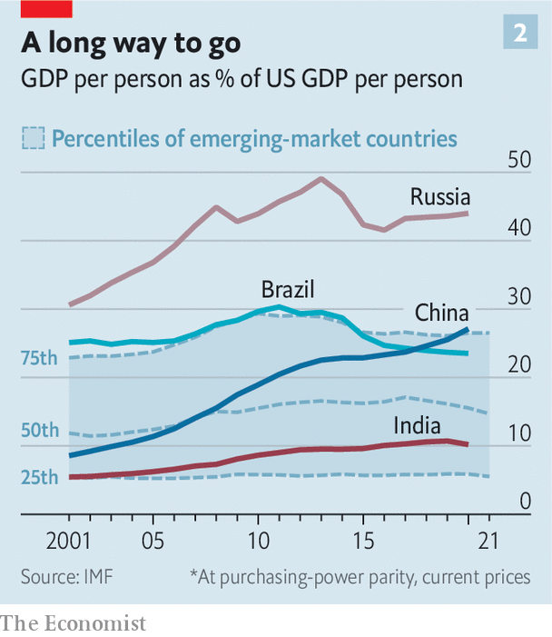
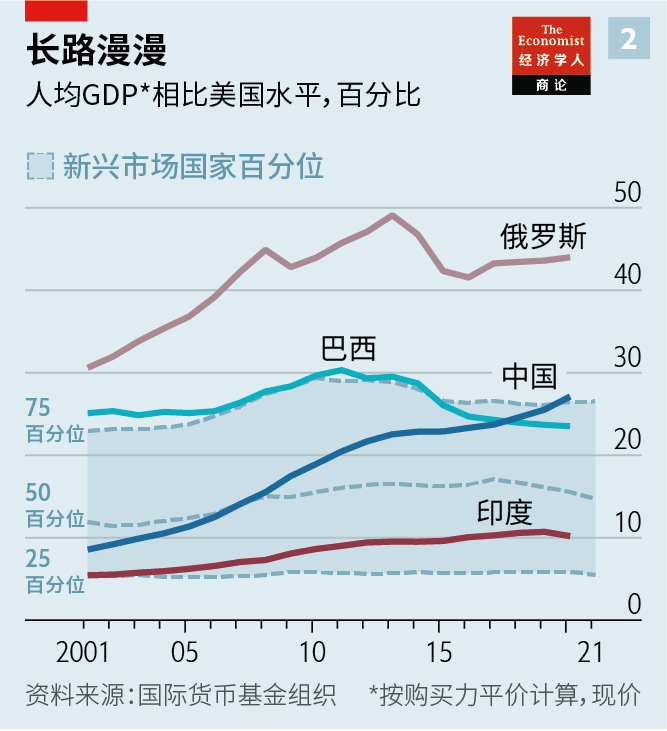
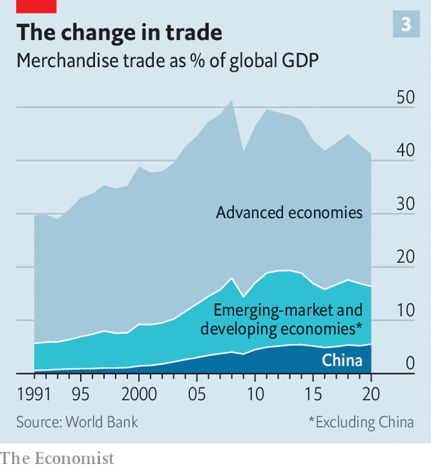
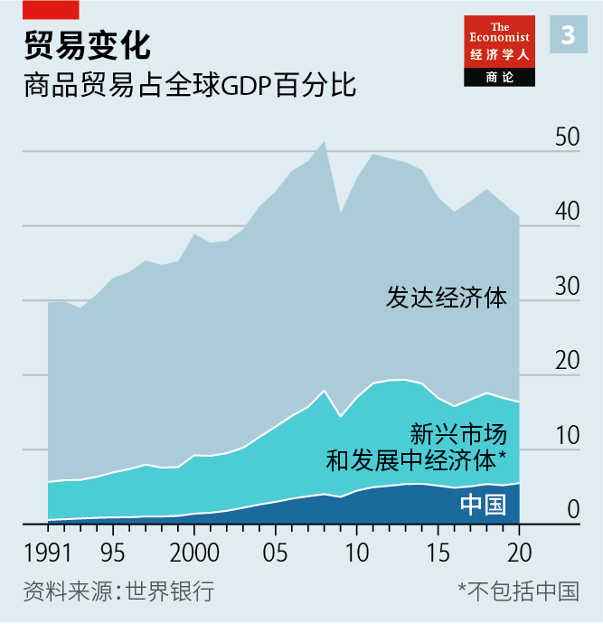
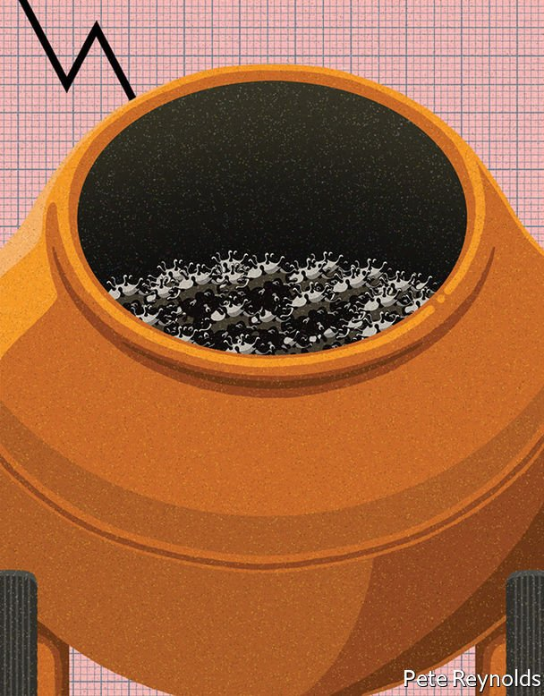

Text
2021-08-16T04:33:47+00:00
A mixed-up slowdown
纷乱的放缓
紛亂的放緩
The prospects for developing countries are not what they once were
发展中国家的前景不同于以往想象
發展中國家的前景不同於以往想象
Twenty years on, growth in the BRICs has slowed
二十年过去了，金砖四国增长放缓【深度】
二十年過去了，金磚四國增長放緩【深度】

IN 2000 THIS newspaper wrote that “the most pressing moral, political and economic issue of our time is third-world poverty.” At the time, 28% of the world’s population lived in extreme poverty, which is to say on incomes of $1.90 a day or less. Nearly one billion of those 1.7bn people lived in India and China.
本刊曾在2000年写道：“我们这个时代在道义、政治和经济上最迫切要解决的问题是第三世界的贫困。”当时，世界上有28%的人口生活在极端贫困中，也就是日收入不高于1.9美元。这17亿人中有近10亿人在印度和中国。
本刊曾在2000年寫道：“我們這個時代在道義、政治和經濟上最迫切要解決的問題是第三世界的貧困。”當時，世界上有28%的人口生活在極端貧困中，也就是日收入不高於1.9美元。這17億人中有近10億人在印度和中國。
Just a year later, Jim O’Neill, then the chief economist for Goldman Sachs, a bank, grouped those two countries, along with Brazil and Russia, into one of the defining acronyms of the 2000s: the BRICs. Though at the time the quartet accounted for only 8% of global economic output, Mr O’Neill argued that, given their population, even modest growth in their output per person would increase that share significantly, and that such growth looked likely. Investors were urged to take note. So were policymakers.
不过一年后，时任高盛银行首席经济学家的吉姆·奥尼尔（Jim O'Neill）把这两国与巴西和俄罗斯合称为“金砖四国”，“BRICs”成为2000年代标志性的缩写词之一。尽管这四国当时的经济产出只占全球的8%，但奥尼尔认为，它们人口基数庞大，人均产出即便只是略有增长，在全球总产出中的占比也会显著上升，而这样的增长看起来很可能发生。投资者被提醒要多加关注。政策制定者也一样。
不過一年後，時任高盛銀行首席經濟學家的吉姆·奧尼爾（Jim O'Neill）把這兩國與巴西和俄羅斯合稱為“金磚四國”，“BRICs”成為2000年代標誌性的縮寫詞之一。儘管這四國當時的經濟產出只佔全球的8%，但奧尼爾認為，它們人口基數龐大，人均產出即便只是略有增長，在全球總產出中的佔比也會顯著上升，而這樣的增長看起來很可能發生。投資者被提醒要多加關注。政策制定者也一樣。
By 2003 Goldman Sachs’s researchers were forecasting that the BRIC economies would, by 2025, have a combined GDP at least half that of the G6 (America, Britain, France, Germany, Italy and Japan). By 2040 they expected the BRICs to have pulled ahead. A dramatically different world was on its way, one in which the big emerging economies had pretty much caught up with the developed economies of the North in economic heft if not in terms of income per person.
2003年，高盛的研究人员预测，到2025年，金砖四国的GDP总和将至少达到六国集团（美国、英国、法国、德国、意大利和日本）总和的一半；在2040年前会赶超。当时世界格局正在发生大转变，大型新兴经济体在经济体量上几乎就要赶上发达经济体，虽然在人均收入上还不行。
2003年，高盛的研究人員預測，到2025年，金磚四國的GDP總和將至少達到六國集團（美國、英國、法國、德國、意大利和日本）總和的一半；在2040年前會趕超。當時世界格局正在發生大轉變，大型新興經濟體在經濟體量上幾乎就要趕上發達經濟體，雖然在人均收入上還不行。
The first prediction was too conservative. From 2000 to 2011, the BRICs grew on average by a startling 17% per year, in nominal US dollars at market-exchange rates, while the G6 grew at just 4%. They reached half the G6’s GDP by 2017, not 2025. In 2021, the IMF projects, BRIC GDP will be worth about 57% of the G6’s (see chart 1). Last year China announced that it had eradicated extreme poverty. As of 2018 the number of people living in extreme poverty in India had fallen below the estimated 99m people living in extreme poverty in Nigeria. It is a historic achievement.
第一个预测过于保守了。从2000年到2011年，按市场汇率以名义美元计算，金砖四国平均年增速达到惊人的17%，而六国集团仅为4%。到2017年，而非预测的2025年，金砖四国的GDP就已经达到六国集团的一半。国际货币基金组织预测，金砖四国的GDP在2021年将达到六国集团的57%（见图表1）。去年，中国宣布已消除极端贫困。到2018年，尼日利亚估计有9900万极端贫困人口，而印度已低于这一水平。这是历史性的成就。
第一個預測過於保守了。從2000年到2011年，按市場匯率以名義美元計算，金磚四國平均年增速達到驚人的17%，而六國集團僅為4%。到2017年，而非預測的2025年，金磚四國的GDP就已經達到六國集團的一半。國際貨幣基金組織預測，金磚四國的GDP在2021年將達到六國集團的57%（見圖表1）。去年，中國宣布已消除極端貧困。到2018年，尼日利亞估計有9900萬極端貧困人口，而印度已低於這一水平。這是歷史性的成就。
The 2040 prediction looks more troubled. Growth in advanced economies and developing ones slowed a lot in the 2010s. From 2011 to 2019, G6 growth fell by more than half to below 2% per year. Growth across the BRICs, on the other hand, dropped by nearly 70%, to just 5% per year.
而对2040年的预测如今看来偏误更大。在2010年代，发达经济体和发展中经济体的增长都大幅放缓。从2011年到2019年，六国集团的年增速不到2%，放缓逾半。另一边，金砖四国的整体年增速只有5%，放缓近70%。
而對2040年的預測如今看來偏誤更大。在2010年代，發達經濟體和發展中經濟體的增長都大幅放緩。從2011年到2019年，六國集團的年增速不到2%，放緩逾半。另一邊，金磚四國的整體年增速只有5%，放緩近70%。
The picture across other low- and middle-income countries looks broadly similar. From 2000 to 2011, the weighted average annual growth rate of GDP, in US dollar terms, was a robust 9% for emerging economies when the BRICs were excluded. Real income per person in developing countries as a fraction of real incomes in America (generally considered the ne plus ultra in economics) was 12.1% in 2001. By 2011 it was almost half again as much: 17.8% (see chart 2).
其他低收入和中等收入国家的情况基本类似。从2000年到2011年，按美元计算，金砖四国之外的新兴经济体的增长相当强劲，GDP加权平均年增速达到9%。2001年，发展中国家人均实际收入是美国人均实际收入（在经济学中通常被视为最佳参照物）的12.1%。到2011年，该比例提高了大约一半，达到17.8%（见图表2）。
其他低收入和中等收入國家的情況基本類似。從2000年到2011年，按美元計算，金磚四國之外的新興經濟體的增長相當強勁，GDP加權平均年增速達到9%。2001年，發展中國家人均實際收入是美國人均實際收入（在經濟學中通常被視為最佳參照物）的12.1%。到2011年，該比例提高了大約一半，達到17.8%（見圖表2）。
But by the time that measure reached its peak—18.4% in 2013—incomes in the Middle East, Central Asia and Latin America were already in decline relative to those in the United States. By the next year incomes in Africa were dropping further behind those in America, too. Only South and East Asia and the emerging parts of Europe have kept gaining on American incomes. For the developing world as a whole, real income per person has fallen back to 18.1% of what it is in America; not a terrible reverse, but definitely a stagnation.
但到2013年该指标达到18.4%的峰值时，中东、中亚和拉美的收入相对美国已经下降。到2014年，非洲的收入水平也进一步与美国拉开距离。只有南亚、东亚及欧洲新兴地区的收入继续追赶美国。整体上看，发展中国家的人均实际收入与美国这一数字的比值已回落至18.1%，倒退不算惊人，但毫无疑问这场追赶陷入了停滞。
但到2013年該指標達到18.4%的峰值時，中東、中亞和拉美的收入相對美國已經下降。到2014年，非洲的收入水平也進一步與美國拉開距離。只有南亞、東亞及歐洲新興地區的收入繼續追趕美國。整體上看，發展中國家的人均實際收入與美國這一數字的比值已回落至18.1%，倒退不算驚人，但毫無疑問這場追趕陷入了停滯。
Playing catch-up
拼命追赶
拚命追趕
The 2010s were hardly a terrible decade. Indeed in terms of emerging-market growth they were the second-best decade in history. The problem is that the 2000s were so much better. In terms of the impact on human lives, there can be few bigger questions than whether growth in the 2020s will return to the heights of the startling 2000s, hang around the levels seen in the adequate 2010s, or continue its downward trend. Such a trajectory would make talk of any significant part of the developing world “catching up” with the advanced economies look increasingly foolish.
2010年代远说不上是糟糕的十年。事实上，论新兴市场的增长，这是史上第二好的十年。主要是2000年代的表现太好了。说到对人们生活的影响，最大的疑问莫过于：2020年代的增长是会重回2000年代的惊人高度，还是会在2010年代的合理水平上徘徊，或者继续放缓？在这样一条轨迹下，谈论发展中世界的任何重要部分“赶上”发达经济体就显得日益荒唐了。
2010年代遠說不上是糟糕的十年。事實上，論新興市場的增長，這是史上第二好的十年。主要是2000年代的表現太好了。說到對人們生活的影響，最大的疑問莫過於：2020年代的增長是會重回2000年代的驚人高度，還是會在2010年代的合理水平上徘徊，或者繼續放緩？在這樣一條軌跡下，談論發展中世界的任何重要部分“趕上”發達經濟體就顯得日益荒唐了。
Economists once thought that poorer countries ought naturally to catch up with richer ones. Becoming rich seemed little more than a matter of borrowing technologies from more mature economies and equipping workers with more capital, of both the physical and human sort.
经济学家曾认为，穷国理所当然能追上富国。致富之道似乎不外乎从更成熟的经济体借来技术，并为工人配备更多实物和人力资本。
經濟學家曾認為，窮國理所當然能追上富國。致富之道似乎不外乎從更成熟的經濟體借來技術，並為工人配備更多實物和人力資本。
Yet in the aftermath of the second world war joining the ranks of the rich was revealed to be harder for the previously colonised world than had been thought. Investors occasionally grew enthusiastic about the prospects for poorer countries, as in 1981, when a World Bank employee named Antoine van Agtmael coined “emerging markets” as an eye- (and money-)catching name for a new third-world investment fund. But only a few countries made the leap from poor to rich over the latter decades of the 20th century: a South Korea here and a Taiwan there.
然而人们发现，二战后，前殖民地地区要加入富裕世界比想象中更难。投资者偶尔会看好贫穷国家的发展前景，例如在1981年，世界银行雇员安托万·范·阿格特梅尔（Antoine van Agtmael）为一只投资第三世界的新基金创造了“新兴市场”这一既吸睛又吸金的名词。但在20世纪末的几十年里，只有少数国家和地区实现了从贫穷到富裕的飞跃，例如韩国和台湾。
然而人們發現，二戰後，前殖民地地區要加入富裕世界比想象中更難。投資者偶爾會看好貧窮國家的發展前景，例如在1981年，世界銀行僱員安托萬·范·阿格特梅爾（Antoine van Agtmael）為一隻投資第三世界的新基金創造了“新興市場”這一既吸睛又吸金的名詞。但在20世紀末的幾十年里，只有少數國家和地區實現了從貧窮到富裕的飛躍，例如韓國和台灣。
It was against this background that the rise of the BRICs seemed truly startling. But it was hardly an overnight success. In the late 1970s China began a long process of economic liberalisation; India started relaxing state control over its economy in 1991. Debt and financial crises which had dealt devastating setbacks to growth from the 1970s saw a broad-based shift in policy across the developing world towards what is often referred to as the “Washington consensus”: becoming more open to trade and keeping government borrowing and inflation in check.
在这种背景下，金砖四国的崛起看起来着实惊人。但这并非一夜之功。上世纪70年代末，中国启动了经济自由化的漫长进程；印度在1991年开始放松政府对经济的控制。从上世纪70年代开始，债务和金融危机对经济增长造成毁灭性打击，发展中国家的政策纷纷转而朝着“华盛顿共识”的方向调整：加大开放贸易，并控制政府举债和通胀。
在這種背景下，金磚四國的崛起看起來着實驚人。但這並非一夜之功。上世紀70年代末，中國啟動了經濟自由化的漫長進程；印度在1991年開始放鬆政府對經濟的控制。從上世紀70年代開始，債務和金融危機對經濟增長造成毀滅性打擊，發展中國家的政策紛紛轉而朝着“華盛頓共識”的方向調整：加大開放貿易，並控制政府舉債和通脹。
To this already healthy soil three further fertilisers were added. One was the arrival of persistently low interest rates and globalised finance, which provided a lot of money willing to seek out opportunities in emerging markets judged to be more stable than they had been. Another was a broad and sustained rise in commodity prices, which boosted the fortunes of many developing-world economies.
在这本就健康的土壤上，还施加了三种肥料。一是持续的低利率和全球化金融。这带来了大量资金，这些钱愿意在新兴市场这个被认为已经比以往更稳定的地方寻找机会。二是大宗商品价格普遍持续上涨，令许多发展中经济体财富增长。
在這本就健康的土壤上，還施加了三種肥料。一是持續的低利率和全球化金融。這帶來了大量資金，這些錢願意在新興市場這個被認為已經比以往更穩定的地方尋找機會。二是大宗商品價格普遍持續上漲，令許多發展中經濟體財富增長。
The third was explosive growth in trade. Manufacturing for export, a time-tested route to catching up, had once required the slow and difficult process of building up an indigenous industrial base. But as production processes once contained within a single plant or country spread out along global supply chains it became possible for poorer economies to begin producing for export by grabbing hold of small pieces of production networks, rather than recapitulating everything.
三是贸易的爆炸性增长。要赶超富国，一个屡试不爽的途径就是出口型制造业。以往这意味着先要费时费力地在本地建立工业基地。但是，随着以往局限在一个工厂或国家内的生产流程扩展到全球供应链上，较贫穷的经济体只要抓住生产网络中的一个小环节便可启动出口型制造，而无需包揽一切。
三是貿易的爆炸性增長。要趕超富國，一個屢試不爽的途徑就是出口型製造業。以往這意味着先要費時費力地在本地建立工業基地。但是，隨着以往局限在一個工廠或國家內的生產流程擴展到全球供應鏈上，較貧窮的經濟體只要抓住生產網絡中的一個小環節便可啟動出口型製造，而無需包攬一切。
As a share of global GDP, trade rose from 39% in 1990 to 51% in 2000, eventually reaching a peak of 61% in 2008. China, through which most of the new supply chains ran, saw its share of global exports rise from about 2% to 9% over the same period. Its share of global GDP rose from 4% to 12%.
贸易占全球GDP的比重从1990年的39%上升至2000年的51%，最后在2008年达到61%的峰值。全球大多数新供应链都经过中国；在同一时期，中国占全球出口的比重从约2%上升至9%，占全球GDP的比例也从4%上升至12%。
貿易佔全球GDP的比重從1990年的39%上升至2000年的51%，最後在2008年達到61%的峰值。全球大多數新供應鏈都經過中國；在同一時期，中國佔全球出口的比重從約2%上升至9%，佔全球GDP的比例也從4%上升至12%。
The added effects of two of the three fertilisers, the commodities boom and the boom in trade, both wore off in the 2010s. The IMF’s index of commodity prices roughly tripled from 2000 to 2011. After that it began to fall, and in doing so exposed those economies which had enjoyed a superficial boom built on higher prices for their resource exports and easy credit.
三大肥料中，大宗商品繁荣和贸易增长带来的额外效应都已在2010年代消退。国际货币基金组织的大宗商品价格指数从2000年到2011年上升了约两倍，之后开始下降，曾靠资源出口价格上涨和宽松信贷享受了一轮表面繁荣的经济体继而面对高风险。
三大肥料中，大宗商品繁榮和貿易增長帶來的額外效應都已在2010年代消退。國際貨幣基金組織的大宗商品價格指數從2000年到2011年上升了約兩倍，之後開始下降，曾靠資源出口價格上漲和寬鬆信貸享受了一輪表面繁榮的經濟體繼而面對高風險。
Trade growth also slowed. Having recovered encouragingly after the global financial crisis of 2007-09, in the mid 2010s trade began to decline slightly as a share of global GDP (see chart 3). There were a number of reasons for this, but an important one was a decisive shift in Chinese policy. The pace of reform slackened; state intervention increased as the government made a push for self-sufficiency.
贸易增长也放缓了。在2007年至2009年的全球金融危机之后，贸易占全球GDP的比重回升，令人鼓舞，但在2010年代中期又开始略微下降（见图表3）。这其中有多种原因，但一大原因是中国政策的一种决定性转变。改革的步伐放慢；中国政府力求自给自足，国家干预加大。
貿易增長也放緩了。在2007年至2009年的全球金融危機之後，貿易佔全球GDP的比重回升，令人鼓舞，但在2010年代中期又開始略微下降（見圖表3）。這其中有多種原因，但一大原因是中國政策的一種決定性轉變。改革的步伐放慢；中國政府力求自給自足，國家干預加大。
Slowdown boat to China
去往中国的船减速
去往中國的船減速
The Communist Party’s interest in reducing the role of state-owned enterprises, key to the dramatic increase in the size and importance of privately owned firms during the boom years, waned in the 2010s. Such firms generate lower returns on their assets than their private cousins while carrying higher levels of debt.
在之前的经济飞速发展时期，共产党弱化国企的角色，这是私营企业规模及重要性大增的关键。但这种意愿在2010年代减退了。国企的资产回报率低于其私营同行，而负债更高。
在之前的經濟飛速發展時期，共產黨弱化國企的角色，這是私營企業規模及重要性大增的關鍵。但這種意願在2010年代減退了。國企的資產回報率低於其私營同行，而負債更高。
China’s failure to go on liberalising has slowed traffic on the most desirable path to development for the rest of the emerging world. If China had grown more and its consumption patterns had converged with those of advanced economies it would have become an ever greater market for other developing countries. But insufficient reform has also left consumption well short of the level common in economies with comparable incomes (like Mexico and Thailand), to say nothing of those in the rich world.
中国未能继续自由化进程，这拖慢了其他新兴国家在这条最理想的发展道路上的步伐。如果中国经济能增长更多，消费模式能与发达经济体趋同，它应该能为其他发展中国家提供一个不断扩大的市场。但由于改革不充分，中国的消费水平远低于墨西哥和泰国等与其收入水平相当的经济体，更别说和富裕国家比了。
中國未能繼續自由化進程，這拖慢了其他新興國家在這條最理想的發展道路上的步伐。如果中國經濟能增長更多，消費模式能與發達經濟體趨同，它應該能為其他發展中國家提供一個不斷擴大的市場。但由於改革不充分，中國的消費水平遠低於墨西哥和泰國等與其收入水平相當的經濟體，更別說和富裕國家比了。
China’s domestic market, while still enormous, is thus substantially less massive than it might have been, and its imports a lot less than they could have been. To exacerbate matters China remains much more dependent on manufacturing than many comparably rich economies. Countries typically begin to shed some industrial production as incomes rise and producers seek out low-wage workers elsewhere. But China has resisted this trend, thanks partly to its stalled progress on reform and partly to a deliberate effort to become more self-sufficient.
所以，中国的国内市场虽然庞大，但远小于它本可能达到的规模，进口也是如此。更糟糕的是，相比许多同等富裕的经济体，中国对制造业的依赖程度仍然高得多。在别的国家，随着收入增加，生产者会转移到其他地方寻找低薪劳动力，工业生产的规模一般都会有所缩减。但中国没走上这个方向，一方面是由于改革停滞不前，另一方面是因为中国在有意加强自给自足。
所以，中國的國內市場雖然龐大，但遠小於它本可能達到的規模，進口也是如此。更糟糕的是，相比許多同等富裕的經濟體，中國對製造業的依賴程度仍然高得多。在別的國家，隨着收入增加，生產者會轉移到其他地方尋找低薪勞動力，工業生產的規模一般都會有所縮減。但中國沒走上這個方向，一方面是由於改革停滯不前，另一方面是因為中國在有意加強自給自足。
An analysis by Shoumitro Chatterjee of Pennsylvania State University and Arvind Subramanian of the Centre for Global Development notes that, though China has not given up ground in terms of manufacturing exports in aggregate, it has ceded some market space in particularly labour-intensive manufacturing industries such as production of footwear, clothing and furniture. And yet its losses have, on the whole, been quite small, and have led to limited and concentrated gains in export-market share for other economies. China’s share of global footwear exports declined from 40% to 32.5% between 2008 and 2018, for example; Vietnam—the biggest beneficiary of changes in China’s export profile—captured 5.9 of the 7.5 percentage points in export space vacated by China.
宾夕法尼亚州立大学教授苏米特拉·查特吉（Shoumitro Chatterjee）与全球发展中心（Centre for Global Development）的阿文德·萨勃拉曼尼亚（Arvind Subramanian）发表分析指出，虽然中国在总体上没有放弃制造出口这个地盘，但还是让出了一部分市场空间，特别是鞋类、服装和家具这类劳动密集型制造业。然而，总体而言，中国让出的市场相当小，导致其他经济体在出口市场份额上的收获有限且集中。例如从2008年到2018年，中国占全球鞋类出口的份额从40%下降到32.5%，在这让出的7.5个百分点的出口份额中，越南（中国出口变化的最大受益者）抢到了5.9个百分点。
賓夕法尼亞州立大學教授蘇米特拉·查特吉（Shoumitro Chatterjee）與全球發展中心（Centre for Global Development）的阿文德·薩勃拉曼尼亞（Arvind Subramanian）發表分析指出，雖然中國在總體上沒有放棄製造出口這個地盤，但還是讓出了一部分市場空間，特別是鞋類、服裝和傢具這類勞動密集型製造業。然而，總體而言，中國讓出的市場相當小，導致其他經濟體在出口市場份額上的收穫有限且集中。例如從2008年到2018年，中國佔全球鞋類出口的份額從40%下降到32.5%，在這讓出的7.5個百分點的出口份額中，越南（中國出口變化的最大受益者）搶到了5.9個百分點。
China’s failure to import manufactured goods on the scale that might have been expected exacerbates what Dani Rodrik of Harvard University has dubbed premature de-industrialisation. Producing goods for export no longer seems able to propel a developing economy as far down the road towards rich-world incomes as was once the case. Low Chinese demand is far from the only factor. Greater manufacturing productivity has pushed the global price of manufactured goods down. It is increasingly common for even low-income countries to import them rather than learn to make them for others.
中国从国外进口制成品的规模未如预期，加剧了哈佛大学教授丹尼·罗德里克（Dani Rodrik）所说的“过早去工业化”。出口导向的制造业似乎不再能像以前那样推动发展中经济体一路迈入富裕世界收入水平。中国需求低迷远非唯一因素。制造业生产率的提升推动了全球制成品价格下降。连低收入国家也越来越普遍地选择进口制成品，而不是学习为他国制造这些产品。
中國從國外進口製成品的規模未如預期，加劇了哈佛大學教授丹尼·羅德里克（Dani Rodrik）所說的“過早去工業化”。出口導向的製造業似乎不再能像以前那樣推動發展中經濟體一路邁入富裕世界收入水平。中國需求低迷遠非唯一因素。製造業生產率的提升推動了全球製成品價格下降。連低收入國家也越來越普遍地選擇進口製成品，而不是學習為他國製造這些產品。
Very poor countries in Africa could still enjoy a big boost to productivity and incomes by increasing the role of manufacturing in their economies. But as Mr Subramanian notes, the development of machines which can handle ever more of the tasks now done by human workers at ever lower costs cannot help but limit the scope for convergence via industrialisation.
极度贫穷的非洲国家通过加大经济中的制造业比重，仍可大大提升生产率和收入。但正如萨勃拉曼尼亚指出的那样，机器将以日益低廉的成本完成越来越多目前由人力完成的工作，这样的发展势必会限制通过工业化实现经济趋同的空间。
極度貧窮的非洲國家通過加大經濟中的製造業比重，仍可大大提升生產率和收入。但正如薩勃拉曼尼亞指出的那樣，機器將以日益低廉的成本完成越來越多目前由人力完成的工作，這樣的發展勢必會限制通過工業化實現經濟趨同的空間。
With the boosting effects of commodity prices and trade growth in abeyance, what of the third factor that kicked off the glory years of the 2000s: interest rates? They remain low. But a post-covid-19 rich-world boom, which would in general be a good thing for developing countries, carries some risks on that front. Some economists warn that big spending in America threatens to unleash inflation in a way which could force the Federal Reserve to raise interest rates earlier, and perhaps more sharply, than currently expected. The spread of high interest rates could wreak havoc, leading to crashing asset prices and drawing a lot of capital away from the emerging world.
在大宗商品价格和贸易增长的助力减弱之时，开启了辉煌2000年代的第三个因素——利率——又如何？利率目前还保持在低位。然而，虽然富裕世界的后疫情繁荣期对发展中国家总体而言是件好事，却可能在利率方面带来一定风险。一些经济学家警告，美国的大幅支出可能引发通胀，也许会让美联储不得不比如今的预期更早加息，幅度也可能更大。高利率蔓延会造成重创，导致资产价格崩溃，让大量资本从新兴世界流走。
在大宗商品價格和貿易增長的助力減弱之時，開啟了輝煌2000年代的第三個因素——利率——又如何？利率目前還保持在低位。然而，雖然富裕世界的後疫情繁榮期對發展中國家總體而言是件好事，卻可能在利率方面帶來一定風險。一些經濟學家警告，美國的大幅支出可能引發通脹，也許會讓美聯儲不得不比如今的預期更早加息，幅度也可能更大。高利率蔓延會造成重創，導致資產價格崩潰，讓大量資本從新興世界流走。
Even a modest rise in American interest rates in coming years, prompted by healthy growth and falling unemployment, could catch out some overstretched governments, much as the Fed’s decision to stop stimulating the economy by buying assets led to acute discomfort for a “fragile five” nations (Brazil, India, Indonesia, South Africa and Turkey) in 2013.
未来几年，即便美国基于经济健康增长和失业率下降而决定小幅加息，也可能让一些过度负债的政府措手不及，就像2013年美联储决定停止通过购买资产来刺激经济时，“脆弱五国”（巴西、印度、印度尼西亚、南非和土耳其）就大感不适。
未來幾年，即便美國基於經濟健康增長和失業率下降而決定小幅加息，也可能讓一些過度負債的政府措手不及，就像2013年美聯儲決定停止通過購買資產來刺激經濟時，“脆弱五國”（巴西、印度、印度尼西亞、南非和土耳其）就大感不適。
But for now the risk of calamity seems to be low. Interest rates are an unreliable guide to future inflation, but yields on American government bonds have actually declined in recent weeks at all maturities. A robust recovery across advanced economies without a long-term shift towards higher interest rates is quite plausible as well as highly desirable.
但暂时来看，出现灾难性事件的风险不高。利率并非估计未来通胀水平的可靠依据，但最近几周，美国各种期限的政府债券的收益率实际上都下跌了。目前看来，发达世界整体实现强劲复苏而利率不长期上行不但是新兴世界非常期待的，也是颇有可能的。
但暫時來看，出現災難性事件的風險不高。利率並非估計未來通脹水平的可靠依據，但最近幾周，美國各種期限的政府債券的收益率實際上都下跌了。目前看來，發達世界整體實現強勁復蘇而利率不長期上行不但是新興世界非常期待的，也是頗有可能的。
Delta blues
德尔塔蓝调
德爾塔藍調
If the effects of covid-19 are not felt in the form of developed-world monetary policy, though, they will still be devastating. In 2020 output across the emerging world fell by 2.1%. That average is skewed upwards, however, by the fact that China, having managed to contain its initial outbreak, actually saw its economy expand. Other major emerging markets fared far worse. India’s economy shrank by 7.3%, Brazil’s by 4.1%, South Africa’s by 7%. The World Bank estimates that the ranks of those living in extreme poverty are likely to have swollen by 150m.
即使不显现在发达国家的货币政策上，新冠疫情仍将带来极大的破坏性。2020年，整个新兴世界的产出下跌了2.1%。但平均水平正在回升，这是因为中国在最初的疫情爆发后成功控制了态势，经济实际上有所增长。其他主要新兴市场的情况要糟糕得多。印度、巴西和南非的经济分别收缩了7.3%、4.1%和7%。据世界银行估计，极端贫困人口很可能已暴增1.5亿。
即使不顯現在發達國家的貨幣政策上，新冠疫情仍將帶來極大的破壞性。2020年，整個新興世界的產出下跌了2.1%。但平均水平正在回升，這是因為中國在最初的疫情爆發後成功控制了態勢，經濟實際上有所增長。其他主要新興市場的情況要糟糕得多。印度、巴西和南非的經濟分別收縮了7.3%、4.1%和7%。據世界銀行估計，極端貧困人口很可能已暴增1.5億。
Hopes for a robust turnaround in 2021 have foundered on the spread of the Delta variant and the slow pace of vaccination outside rich countries; more than half the developing-world population may still not be vaccinated by the end of this year. On July 27th the IMF, which in April had expected India to grow by more than 12% this year, cut that estimate to 9.5%. Across the emerging world as a whole it expects 6.3% growth this year and 5.2% in 2022.
人们原本希望在2021年能扭转乾坤，但由于德尔塔变异毒株广泛传播，而富裕国家以外的地区疫苗接种缓慢，这种希望已然破灭。到今年年底，发展中国家可能仍有一半以上人口未接种。国际货币基金组织曾在4月预计印度经济增速今年在12%以上，但在7月27日下调至9.5%。它预计新兴世界今年的整体增速为6.3%，2022年为5.2%。
人們原本希望在2021年能扭轉乾坤，但由於德爾塔變異毒株廣泛傳播，而富裕國家以外的地區疫苗接種緩慢，這種希望已然破滅。到今年年底，發展中國家可能仍有一半以上人口未接種。國際貨幣基金組織曾在4月預計印度經濟增速今年在12%以上，但在7月27日下調至9.5%。它預計新興世界今年的整體增速為6.3%，2022年為5.2%。
And the effects will linger. One of the conditions for catching up is investment in human capital; that has been badly hit by the pandemic. Although students around the world lost schooling time to the interruptions caused by the pandemic, those in the poorest nations suffered most. While children in advanced economies missed the equivalent of 15 or so days of instruction on average in 2020, those in emerging markets missed about 45 and children in low-income countries 70. Poor economies can scarcely avoid educational setbacks. The pandemic has also exacerbated problems of governance and political instability in much of the emerging world.
而且疫情的影响将长久挥之不去。追赶富国的条件之一是对人力资本的投资，这受到了疫情的严重打击。虽然全球各地的学生都因疫情的干扰而减少了上学时间，但最贫穷国家的学生受影响最大。2020年，发达经济体的儿童平均损失了15天左右的上课时间，而新兴市场和低收入国家的儿童分别损失了约45天和70天。贫穷经济体在教育上的受挫将无可避免。疫情还加剧了大部分新兴世界治理不佳的问题和政治动荡。
而且疫情的影響將長久揮之不去。追趕富國的條件之一是對人力資本的投資，這受到了疫情的嚴重打擊。雖然全球各地的學生都因疫情的干擾而減少了上學時間，但最貧窮國家的學生受影響最大。2020年，發達經濟體的兒童平均損失了15天左右的上課時間，而新興市場和低收入國家的兒童分別損失了約45天和70天。貧窮經濟體在教育上的受挫將無可避免。疫情還加劇了大部分新興世界治理不佳的問題和政治動蕩。
In the 1990s and 2000s, rapid growth in trade and output was associated with a decline in inequality between countries but a rise in inequality within them, emerging markets very much included. When growth slowed in the 2010s, the distribution of economic gains within economies became relatively more important in determining whether living standards continued to improve, stagnated or fell. A more fractious politics became the norm around the world, and countries slid either towards or further into autocracy. The democracy index produced by The Economist Intelligence Unit, a sister company, has declined every year from 2015 to 2020.
在上世纪90年代和本世纪头十年，随着贸易和产出快速增长，国家间的不平等减轻而国家内部不平等加剧，在新兴市场更是如此。到2010年代增长放缓时，要判断国民生活水平是在继续提升、陷于停滞，还是下滑，相对更重要的指标是经济增长在经济体内部的分配。全球各地的政治都变得更剑拔弩张，民主国家滑向专制，专制国家更是变本加厉。本刊姐妹公司经济学人智库（The Economist Intelligence Unit）发布的民主指数在2015年到2020年间呈逐年下降之势。
在上世紀90年代和本世紀頭十年，隨着貿易和產出快速增長，國家間的不平等減輕而國家內部不平等加劇，在新興市場更是如此。到2010年代增長放緩時，要判斷國民生活水平是在繼續提升、陷於停滯，還是下滑，相對更重要的指標是經濟增長在經濟體內部的分配。全球各地的政治都變得更劍拔弩張，民主國家滑向專制，專制國家更是變本加厲。本刊姐妹公司經濟學人智庫（The Economist Intelligence Unit）發布的民主指數在2015年到2020年間呈逐年下降之勢。
Politicians from the political fringes have enjoyed surprising success, often on the back of unrealistic promises. The policies they have pursued frequently undermine growth, from the surprisingly abstemious fiscal policy of Mexico’s Andrés Manuel López Obrador to the unexpected enthusiasm for welfare spending on the part of India’s Narendra Modi. Mr Subramanian sees increasing evidence that slower growth contributes to political instability, feeding a vicious cycle.
来自政坛边缘地带的政客出乎意料地取胜，往往是靠一些不切实际的承诺。他们所推行的政策经常破坏增长，例如墨西哥总统奥夫拉多尔推出了惊人的紧缩财政政策，而印度总理莫迪出人意料地大力增加福利开支。萨勃拉曼尼亚认为，越来越多的证据表明，增长放缓促发政局不稳，形成恶性循环。
來自政壇邊緣地帶的政客出乎意料地取勝，往往是靠一些不切實際的承諾。他們所推行的政策經常破壞增長，例如墨西哥總統奧夫拉多爾推出了驚人的緊縮財政政策，而印度總理莫迪出人意料地大力增加福利開支。薩勃拉曼尼亞認為，越來越多的證據表明，增長放緩促發政局不穩，形成惡性循環。
The costs of instability are likely to rise further before they fall. Unrest will in some cases limit governments’ ability to tackle pressing policy problems and could deter foreign investment. Reforms aimed at business at home, which have already declined, may become yet more rare. Across low- and middle-income countries, the cost of starting a new business, as a share of income per person, declined steadily in the 2000s, according to the World Bank’s Ease of Doing Business report. But it bottomed out in the 2010s well above that in rich economies and has not shifted since.
政治不稳定带来的成本应该还会继续上升一段时间。有些情况下，社会动荡会影响政府解决紧迫的政策问题，还会吓跑外国投资。针对国内商业的改革已经在收缩，之后还可能变得更少。根据世界银行发布的《营商环境报告》，在所有低收入和中等收入国家，开办新企业的成本占人均收入的比例在2000年代稳步下降，但在2010年代触底反弹，已远高于富裕经济体，而且至今没有转向。
政治不穩定帶來的成本應該還會繼續上升一段時間。有些情況下，社會動蕩會影響政府解決緊迫的政策問題，還會嚇跑外國投資。針對國內商業的改革已經在收縮，之後還可能變得更少。根據世界銀行發布的《營商環境報告》，在所有低收入和中等收入國家，開辦新企業的成本占人均收入的比例在2000年代穩步下降，但在2010年代觸底反彈，已遠高於富裕經濟體，而且至今沒有轉向。
Should global financial markets turn on stressed economies, an absence of social consensus could prevent leaders from taking the macroeconomic steps needed to fend off a crisis. In the worst cases, political instability could deteriorate into internal or even interstate violence.
假如本已承压的经济体突然遭受全球金融市场的冲击，缺乏社会共识可能让领导人难以采取宏观经济措施来抵御危机。最坏的情况是，政治不稳定可能恶化为国家内部甚至国家间的暴力冲突。
假如本已承壓的經濟體突然遭受全球金融市場的衝擊，缺乏社會共識可能讓領導人難以採取宏觀經濟措施來抵禦危機。最壞的情況是，政治不穩定可能惡化為國家內部甚至國家間的暴力衝突。
And this is before one accounts for climate change. Its economic costs are already detectable, will only grow, and are generally felt most heavily in poor countries. Emerging-market governments will face loss and damage, the fiscal burden of adaptation and, often, refugee flows. Both political instability and interstate tensions may well increase.
而这还没有考虑到气候变化。气候变化的经济成本已经可以感知，而且只会有增无减，穷国往往最深有体会。新兴市场政府将面临损失、破坏、做出调适的财政负担，以及往往还有难民潮。政治不稳定和国家间关系紧张都很可能加剧。
而這還沒有考慮到氣候變化。氣候變化的經濟成本已經可以感知，而且只會有增無減，窮國往往最深有體會。新興市場政府將面臨損失、破壞、做出調適的財政負擔，以及往往還有難民潮。政治不穩定和國家間關係緊張都很可能加劇。
The winds of climate change
气候变化之风
氣候變化之風
The first two decades of the millennium demonstrated that sustained, broad-based growth in developing economies was possible—a big surprise to some, and a boon for hundreds of millions. In the absence of the particular boosts it received in the 2000s, growth has slowed, and it now faces both the stumbling block of the pandemic and the persistent headwinds of climate change. But the last of those only serves to stress the moral case for the world as a whole to try to do better; development is at the heart of adaptation.
本世纪前20年的历程表明，发展中经济体可以实现持续而有广泛基础的增长——这让一些人大感意外，也是对数以亿计的人群的福音。在2000年代的那几个推动力消失后，增长已经放缓，而且现在还面对疫情这块绊脚石和气候变化这股持久的逆风。但气候挑战更是从道义的层面突显出全世界需要集体努力来推动增长：发展是应对挑战的关键所在。
本世紀前20年的歷程表明，發展中經濟體可以實現持續而有廣泛基礎的增長——這讓一些人大感意外，也是對數以億計的人群的福音。在2000年代的那幾個推動力消失後，增長已經放緩，而且現在還面對疫情這塊絆腳石和氣候變化這股持久的逆風。但氣候挑戰更是從道義的層面突顯出全世界需要集體努力來推動增長：發展是應對挑戰的關鍵所在。
The catch-up pace of the 2000s may never be seen again. But if things do not worsen further it is still possible for the BRICs to match the output of the G6 by 2040 and for associated growth to spread out quite widely. The gate which was opened at the end of the 20th century has narrowed, but it has not shut. The challenges of passing through it, though, are undeniably greater than they were.■
2000年代的那种追赶速度也许再不会重现。但如果情况不再恶化，金砖四国仍有可能在2040年追上六国集团的产出，而关联增长也可能广泛扩散。20世纪末打开的大门已经关小了，不过还没有完全闭上。但不可否认的是，要通过这扇门，难度比以前更大了。
2000年代的那種追趕速度也許再不會重現。但如果情況不再惡化，金磚四國仍有可能在2040年追上六國集團的產出，而關聯增長也可能廣泛擴散。20世紀末打開的大門已經關小了，不過還沒有完全閉上。但不可否認的是，要通過這扇門，難度比以前更大了。